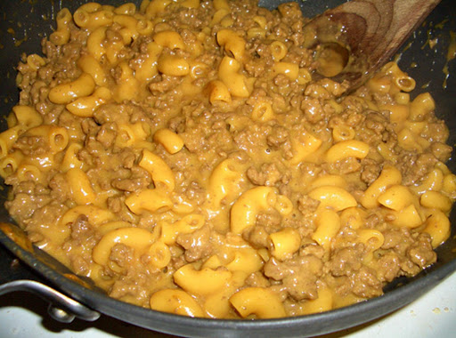

Back
Hamburger Helper

Recipe Description
Hamburger Helper is an easy and filling meal that won't break the bank! Enjoy a cheesy
hamburger pasta by following the directions below!
Ingredients
- 1 Lb groud turkey or beef
- 1 1/3 cups hot water
- 2 cups milk
- 1 box cheesburger Hamburger Helper (pasta and sauce mix)
Steps
- In a 10 inch skillet, brown the meat over medium-high heat
- Stir in hot water, milk, pasta, and sauce mix
- Bring to a boil
-
Reduce heat and cover, stirring occasionally for about 10 minutes, or until desired
consistency
- Serve and Enjoy! Refrigerate any leftovers